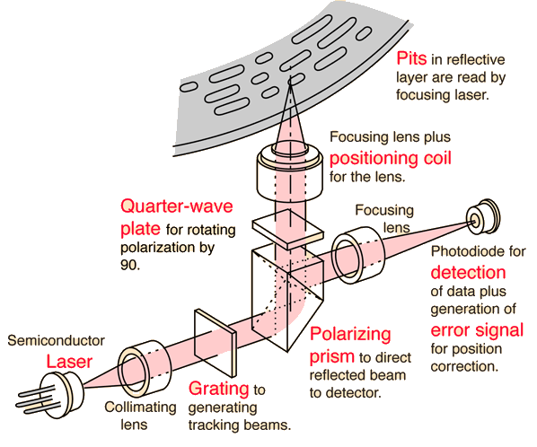

坑：天然容易 “阅读” 的数据存储


Compact Disk (CD, 1980)

在反射平面 (1) 上挖上粗糙的坑 (0)
- 激光扫过表面，就能读出坑的信息来
- 飞利浦 (碟片) 和索尼 (数字音频) 发明
- ~700 MiB，在当时是非常巨大的容量

CD-RW
能否克服只读的限制？
- 方法 1
- 用激光器烧出一个坑来 (“刻盘”)
- 使用持久化数据结构 (append-only)
- 方法 2：改变材料的反光特性
- PCM (Phase-change Material)
- How do rewriteable CDs work?
挖坑的技术进展

CD (740 MB)
- 780nm 红外激光
DVD (4.7 GB)
- 635nm 红色激光
Blue Ray (100 GB)
- 405nm 蓝紫色激光
(在实用方面逐渐被网络淘汰)
光盘：作为存储设备的分析
分析
- 价格
很低 (而且很容易通过 “压盘” 复制)
- 容量
高
- 读写速度
顺序读取速度高；随机读取勉强 写入速度低 (挖坑容易填坑难)
- 可靠性
高
今天的应用场景
- 作为数字收藏
“挖坑”：不止是数据存储